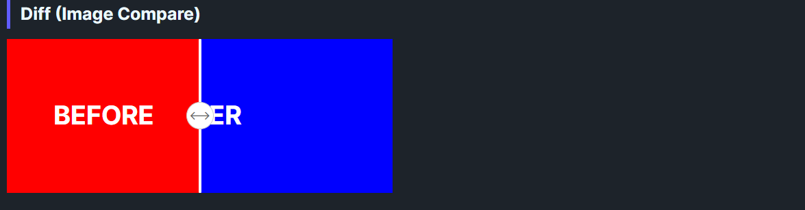

DaisyDiff is a before/after comparison control with a draggable grip. It overlays Image1 atop Image2 and clips the top layer based on Offset (0–100%). Users can drag the grip to reveal more or less of each side; layout adjusts automatically on resize. Supports both horizontal (left-right) and vertical (top-bottom) split orientations.
| Property | Description |
|---|---|
Image1 |
Content shown on top (clipped). Accepts any UI (images, borders, etc.). |
Image2 |
Content shown underneath, full size. |
Offset (0–100, default 50) |
Percentage revealed for Image1; also sets grip position. |
Orientation (Horizontal, default Horizontal) |
Split direction: Horizontal (left-right) or Vertical (top-bottom). |
<!-- Simple color comparison (horizontal) -->
<controls:DaisyDiff Width="450" Height="180">
<controls:DaisyDiff.Image1>
<Border Background="#FF5F56">
<TextBlock Text="BEFORE" Foreground="White" FontWeight="Bold"
HorizontalAlignment="Center" VerticalAlignment="Center" />
</Border>
</controls:DaisyDiff.Image1>
<controls:DaisyDiff.Image2>
<Border Background="#27C93F">
<TextBlock Text="AFTER" Foreground="White" FontWeight="Bold"
HorizontalAlignment="Center" VerticalAlignment="Center" />
</Border>
</controls:DaisyDiff.Image2>
</controls:DaisyDiff>
<!-- Vertical orientation (top-bottom split) -->
<controls:DaisyDiff Width="300" Height="250" Orientation="Vertical">
<controls:DaisyDiff.Image1>
<Border Background="#6366F1">
<TextBlock Text="TOP" Foreground="White" FontWeight="Bold"
HorizontalAlignment="Center" VerticalAlignment="Center" />
</Border>
</controls:DaisyDiff.Image1>
<controls:DaisyDiff.Image2>
<Border Background="#10B981">
<TextBlock Text="BOTTOM" Foreground="White" FontWeight="Bold"
HorizontalAlignment="Center" VerticalAlignment="Center" />
</Border>
</controls:DaisyDiff.Image2>
</controls:DaisyDiff>
<!-- Image comparison with custom start offset -->
<controls:DaisyDiff Width="500" Height="300" Offset="30">
<controls:DaisyDiff.Image1>
<Image Source="ms-appx:///Flowery.Uno.Gallery/Assets/photo-before.jpg" Stretch="UniformToFill" />
</controls:DaisyDiff.Image1>
<controls:DaisyDiff.Image2>
<Image Source="ms-appx:///Flowery.Uno.Gallery/Assets/photo-after.jpg" Stretch="UniformToFill" />
</controls:DaisyDiff.Image2>
</controls:DaisyDiff>Image1 and Image2 the same aspect ratio to avoid jumpy reveals.Width/Height (or parent constraints) so the grip and clipping stay predictable.Offset to highlight the more important state first (e.g., 70 to emphasize the "after").Orientation="Vertical" for tall images or top/bottom comparisons (before/after in vertical layouts).